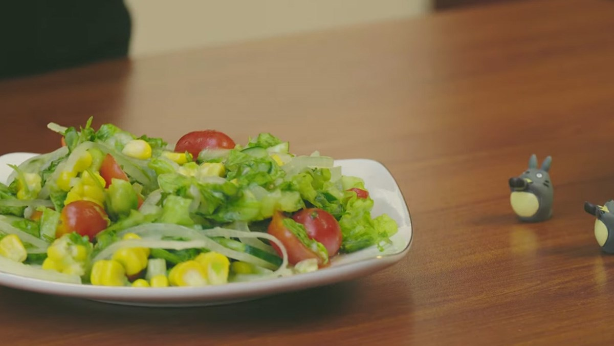

Salad rau củ
Hướng dẫn làm salad rau củ thập cẩm:

Nguyên liệu:
- 2 cây xà lách
- 1 trái dưa chuột
- 15 quả cà chua bi
- Đường, muối, chanh, ớt, tỏi
Hướng dẫn trộn salat:
- Pha nước trộn: nước, đường, muối, chanh, tỏi, ớt
-
- Cho rau củ vào chung một tô lớn sau đó rưới đều nước trộn salad và trộn đều
- Cho salat vào tủ lạnh làm mát trước 10 phút để gia vị thấm đều và thưởng thức